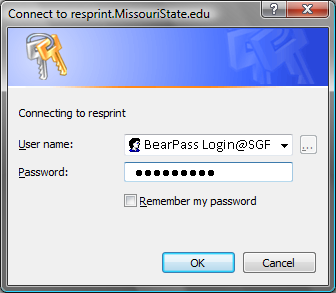

Windows 7 Front Desk printer setup
- Click on the Start button.
In the search box, type \\resprint.missouristate.edu and hit enter.
- You will be prompted for your Missouri State BearPass Login and password. Enter SGF\BearPass Login or BearPass Login@SGF, then enter your Missouri State password and click ok.

- A window should pop up. Find the printer for your residence hall (See Table Below), then right-click and choose Connect...
- After a moment, a window should appear that will ask if you want to install a driver for the printer. Click the button to Install Driver. This step may take a few minutes, so please be patient.
- If the following window appears, you have succesfully installed the printer. you can close this window. When you print, this residence hall printer will be one of the options in the drop-down menu.
- You MUST authenticate to \\resprint.missouristate.edu each time you print to the front desk printer. (This means completing steps #1-2.).